GenICam Explorer
The Silicon Software Tool for Camera Control and Camera Configuration
Content
| 1 | Overview | |
| 1.1 | System Requirements | |
| 2 | GenICam Explorer with GigE Vision | |
| 2.1 | Configuring the GenICam Parameters of the Camera | |
| 2.2 | Saving a Particular Camera Configuration | |
| 2.3 | Setting Timeout and Number of Retries for CAM Communication | |
| 2.4 | Configuring the Link Topology | |
| 2.5 | Saving a Particular Link Topology Configuration | |
| 2.6 | IP Configuration | |
| 3 | GenICam Explorer with CoaXPress | |
| 3.1 | Automatic Actions at Program Start | |
| 3.2 | Configuring the GenICam Parameters of the Camera | |
| 3.3 | Saving a Particular Camera Configuration | |
| 3.4 | Configuring the Link Topology | |
| 3.5 | Saving a Particular Link Topology Configuration | |
| 3.6 | Starting Layout Discovery Manually | |
| 3.7 | Re-Starting the Camera Manually | |
| 3.8 | Configuring Program Behaviour at Program Start |
Overview
The GenICam Explorer is a GUI tool for communication with GigE Vision and CoaXPress cameras. The GenICam Explorer provides direct access to the GenICam interface of the camera.
Using the GenICam Explorer, you can
- adjust your camera settings via a graphical user interface.
- configure the link topology of your vision system.
- save defined settings for later re-use.
The GenICam Explorer comes as part of the runtime installation. Once you have installed your runtime, you can start the GenICam Explorer. The GenICam Explorer supports all cameras with CoaXPress or GigE Vision interface.

System Requirements
If you want to access a camera with the GenICam Explorer, make sure that
• Camera and frame grabber are plugged and powered (camera may be powered by the grabber via power over).
• The Silicon Software Runtime has been installed.
Please note: You can run GenICam Explorer and microDisplay simultaneously. Since Runtime version 5.2, you can make changes in the GenICam Explorer while an applet is loaded in microDisplay and the acquisition is running.

GenICam Explorer with GigE Vision Cameras
Configuring the GenICam Parameters of the Camera
As soon as the GenICam Explorer discovers a camera and connects to the camera, you have direct access to all GenICam Parameters of the Camera.
- Start the GenICam Explorer.
After being started, the GenICam Explorer automatically discovers physically connected cameras and displays information on these camera(s).
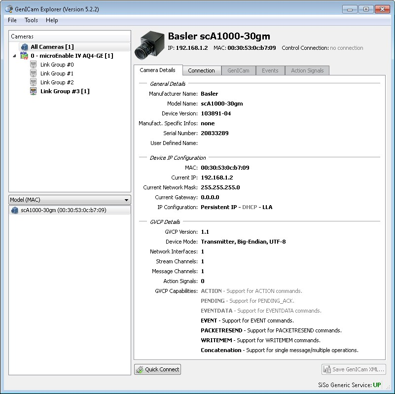
In the upper panel on the left, all frame grabber boards with their link groups are listed.
In the bottom panel on the left, all detected cameras are listed. To get information on a certain camera, select the camera in this panel.
- Click on the Quick Connect button.
Now, the frame grabber connects to the camera vial its GenICam inferface.
- Go to the GenICam tab.
- Select our user role:
You can choose between three display modes (right upper corner): Beginner, Expert, and Guru. If you set the display mode to Beginner, you can only see and alter the most important camera settings. In expert mode, most settings are enabled and in guru mode, all possible settings can be seen and adapted.
- Set all parameters to your needs. You find additional information on each parameter in the right hand bottom panel as soon as you click on the parameter.
- If you don't see the changes in your settings immediately, click on the Force Update button.
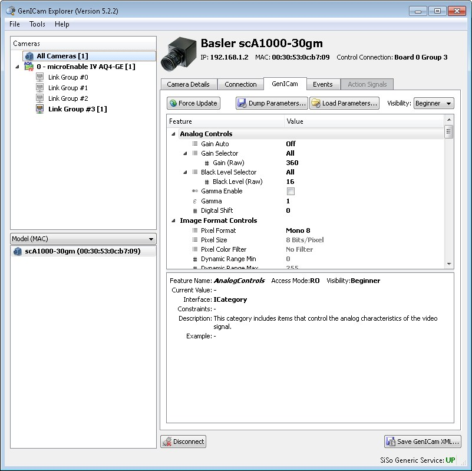

Saving a Particular Camera Configuration
You can save the configuration of a camera and re-use this particular configuration later. The configuration parameters are stored in a text file.
To save a configuration:
- Click on the Dump Parameters... button and define the directory you want to store the configuration file in.
To re-use a configuration:
- Click on the Load Parameters... button and select the configuration file you want to use from your system.

Setting Timeout and Number of Retries for Communication between Frame Grabber and Camera
To configure the timespan, after which timeout occurs, and the number of retries:
- Go to the Connection tab.
- Click on the Advanced Properties ... button.
- Adapt timout and number of retries to your requirements.
Configuring the Link Topology
To adapt the link topology of your vision system to your needs:
- Open the GenICam explorer.
- From the Tools menu, select Hardware.
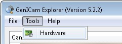
The Hardware Setup dialog opens.
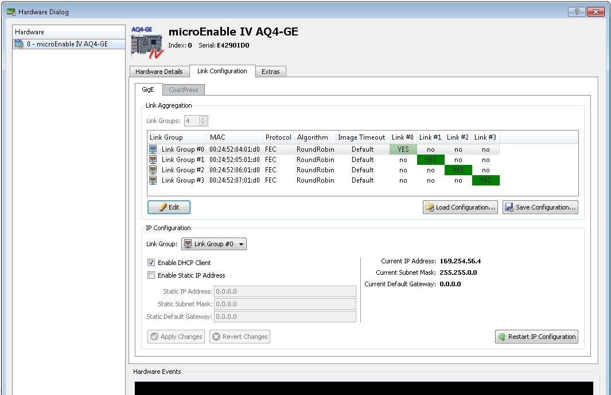
- Check if you need to change the link topology.
Note: Link No. 0 is the port that is physically placed farthest from the mother board, i.e., the link with the highest number is the port physically closest to the motherboard.
- Click on the Edit button to edit the link topology.
- Adapt the parameters to your needs.
If you want to use Link Aggregation: In the field Link Groups, specify how many link groups you want to set up. Define which physical links belong to which link group.
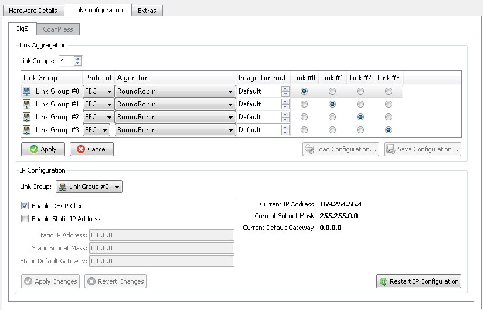
- Click on the Apply button.

Saving a Particular Link Topology Configuration
You can save the configuration of the link topology and re-use this particular configuration later. The configuration parameters are stored in a text file.
To save a configuration:
- Click on the Save Configuration... button and define the directory you want to store the configuration file in.
To re-use a configuration:
- Click on the Load Configuration... button and select the configuration file you want to use from your system.
IP Configuration
To configure the IP address of your frame grabber, use the options in the Hardware Dialog:- Open the GenICam explorer.
- From the Tools menu, select Hardware.
- Adapt the IP configuration to your needs.
- the start window of the GenICam Explorer opens.
- the GenICam Explorer starts the automatic camera discovery.
- the GenICam Explorer connects to the discovered camera.
- the GenICam Explorer opens a window where you can directly adapt the GenICam parameters of the camera to your needs.
- Go to the GenICam tab on your program window.
- Select your user role: You can choose between three display modes (right upper corner): Beginner, Expert, and Guru. If you set the display mode to Beginner, you can only see and alter the most important camera settings. In expert mode, most settings are enabled and in guru mode, all possible settings can be seen and adapted.
- Set all parameters to your needs. You find additional information on each parameter in the right hand bottom panel as soon as you click on the parameter.
- If you don't see the changes in your settings immediately, click on the Force Update button.
- Click on the Save Parameters... button and define the directory you want to store the configuration file in.
- Click on the Load Parameters... button and select the configuration file you want to use from your system.
- Open the GenICam explorer.
- From the Tools menu, select Hardware Setup.
- Check if you need to change the link topology.
- Click on the Edit button to edit the link topology.
- Adapt the parameters to your needs.
- Click on the Apply button.
- Click on the Save Configuration... button and define the directory you want to store the configuration file in.
- Click on the Load Configuration... button and select the configuration file you want to use from your system.
- Click on Start Full Discovery.
- From the Tools menu, select Hardware Setup. The Hardware Setup dialog opens.
- In the left upper corner, select the frame grabber you are working with.
- Go to the Link Configuration tab.
- Click on Restart Layout Discovery.
- Wait until the process is finished. You get an according message. The current link topology is displayed now.
- From the Tools menu, select Hardware Setup. The Hardware Setup dialog opens.
- In the left upper corner, select the frame grabber you are working with.
- Go to the Link Configuration tab.
- Click on the Power Cycle button.
- In the File menu, select Preferences.
- Select the options according to your needs.
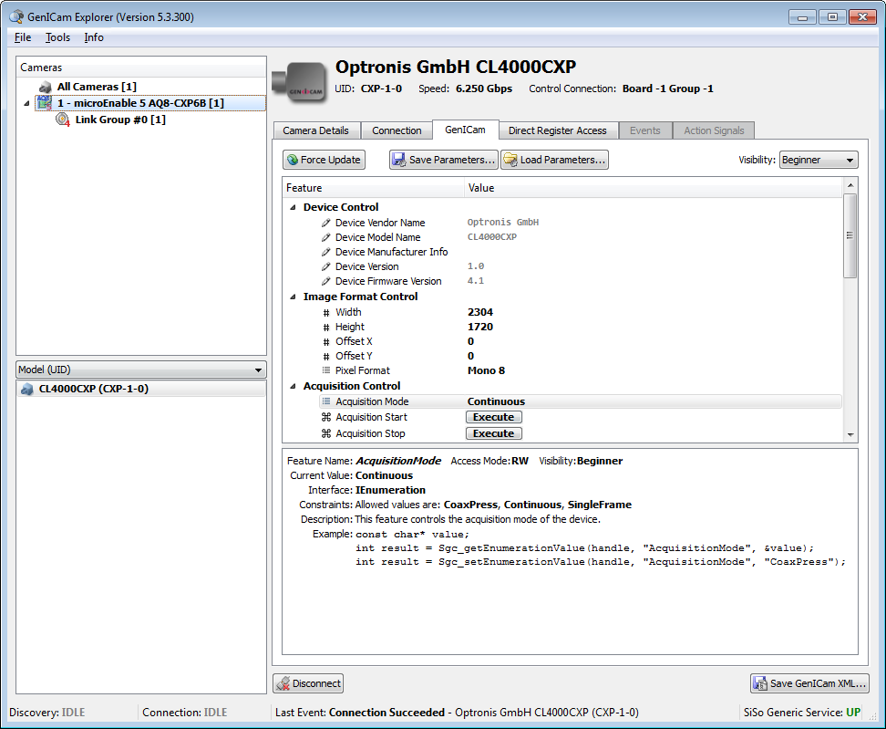
GenICam Explorer connected to a CoaXPress camera
Automatic Actions at Program Start
As soon as the GenICam Explorer is started,
You can define if you want the GenICam Explorer to take all this steps automatically. If you prefer user interaction, you can configure the program behavior (see below).

Configuring the GenICam Parameters of the Camera
As soon as the GenICam Explorer discovers a camera and connects to the camera, you have direct access to all GenICam Parameters of the Camera.
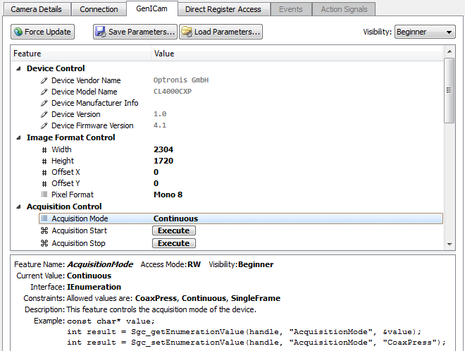

Saving a Particular Camera Configuration
You can save the configuration of a camera and re-use this particular configuration later. The configuration parameters are stored in a text file.
To save a configuration:
To re-use a configuration:

Configuring the Link Topology
To adapt the link topology of your vision system to your needs:
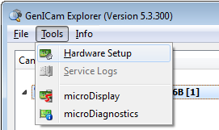
The Hardware Setup dialog opens.
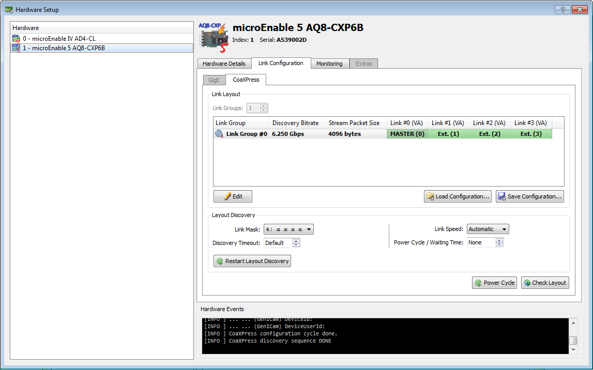

Saving a Particular Link Topology Configuration
You can save the configuration of the link topology and re-use this particular configuration later. The configuration parameters are stored in a text file.
To save a configuration:
To re-use a configuration:

Starting Layout Discovery Manually
If the current link topology cannot be detected or after you changed cable connections, the following message may appear:
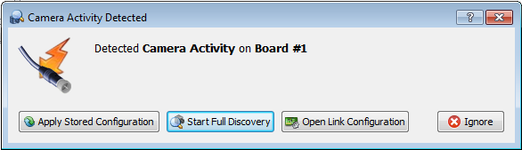
If this message appears, simply:
Otherwise (if this message does not appear):
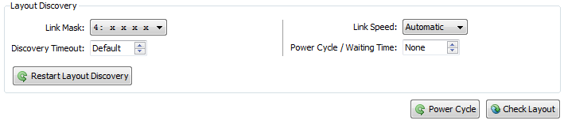

Re-Starting the Camera Manually
To restart the camera:

Configuring Program Behaviour at Program Start
To configure the program behavior at program start:
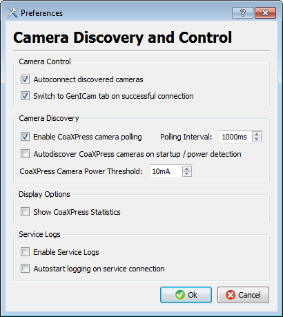
| Forward |